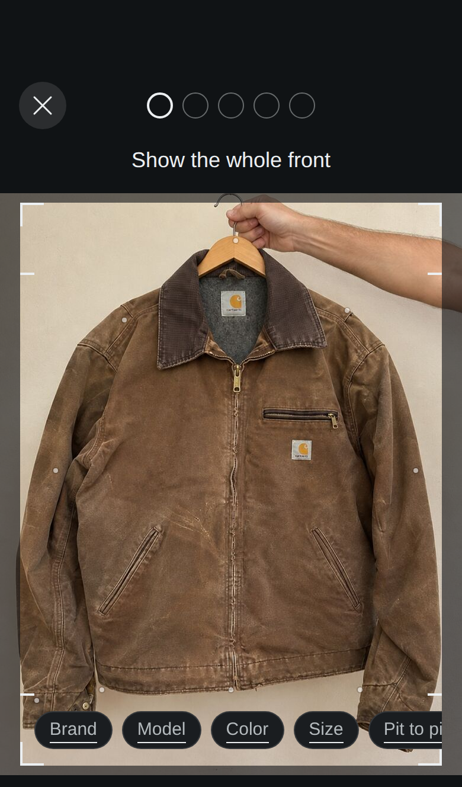
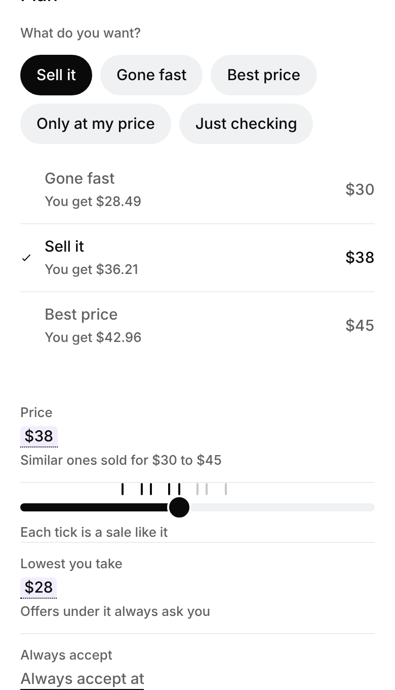
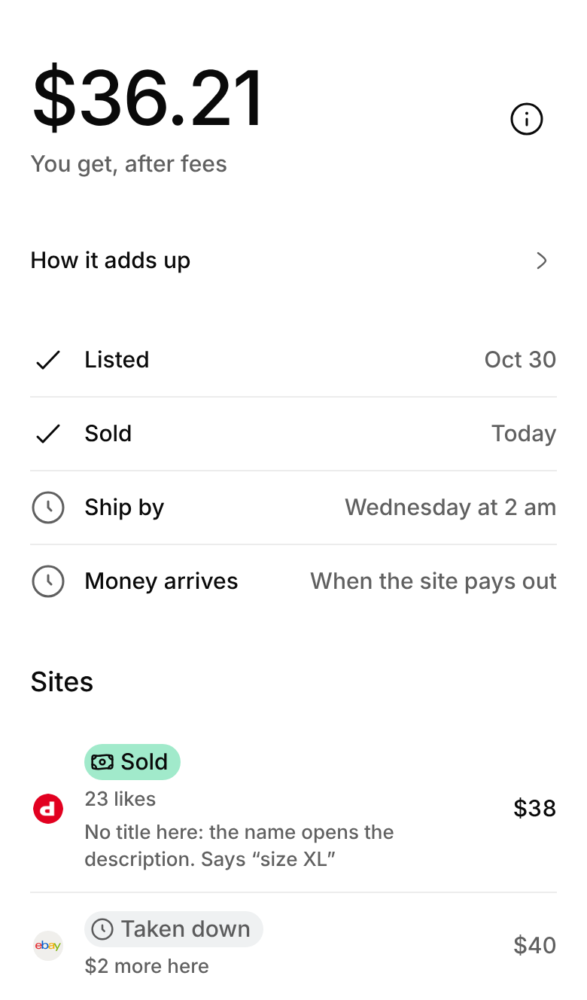
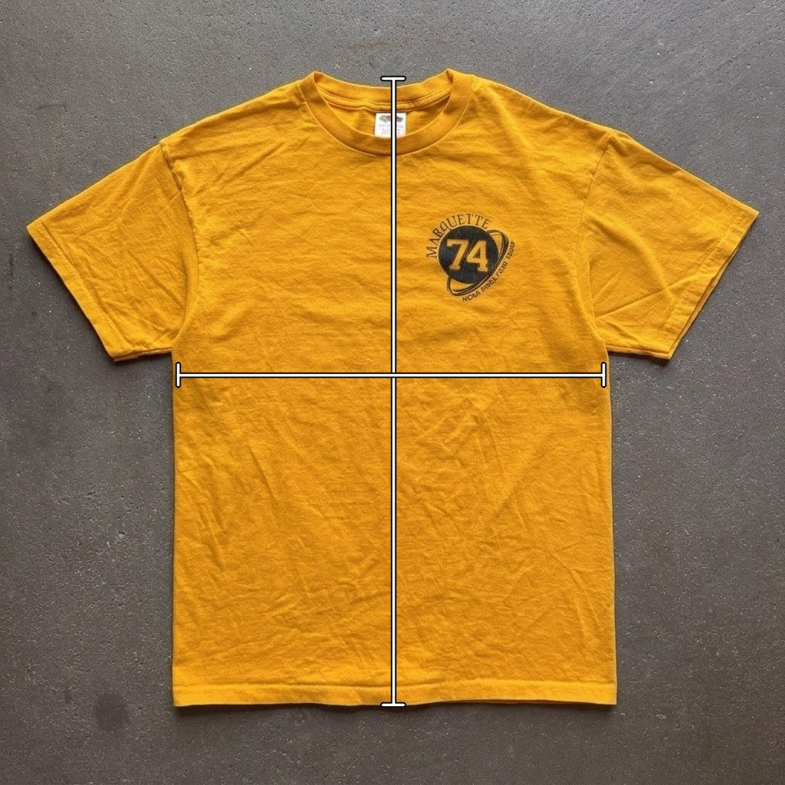
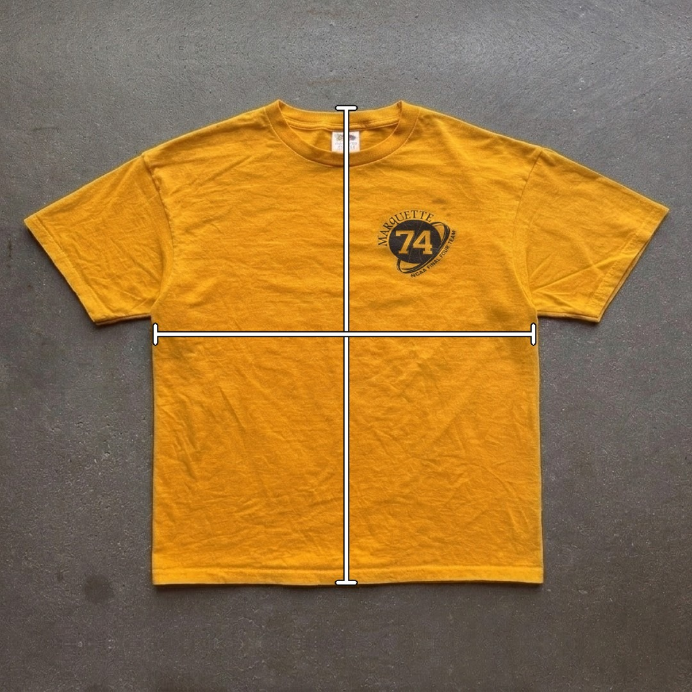

Your second hand, for everything secondhand


From one photo to sold

1Take one photo
The camera says what to frame.

2Check the price
Set from what the same thing sold for. Each tick is a sale.

3It sells once
The other listings come down on their own.
Measured before it posts
Every AI photo is checked against your item's measurements before it posts. If it can't match, your real photo posts instead.



One tee so far. Across three runs, every photo that posted landed within 1.2% of the measurement.